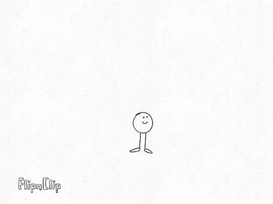

Anticipation
Anticipation is when a subject does an action and prepares to do the action. This is something most people do in real life, like throwing a ball or jumping. Applying anticipation to an animation makes it feel more realistic and gives us context of what the subject is doing. Without this, the subject would feel weird and we wouldn’t know how it changed state.

You can see in this series of frames how the subject prepares to fly or jump; the legs kneel down and then upwards giving a boost as it rises up. This gives context to the viewer about what it is doing, unlike if it didin't do something previous to to it, thus leaving the viewer confused.

Click on the image to see example. In these cutscene from the movie, we can see how the character does some actions prior to throwing the orb; he juggles with the orb meaning that it is risky to handle, and once he has control of it, he proceeds to extend his arm and throws it with force right at the target. A good example of anticipation with a lot of unpretictable action.